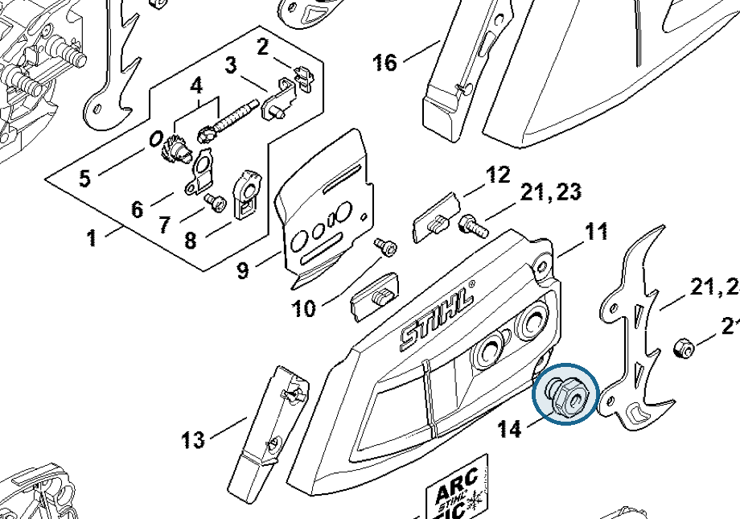
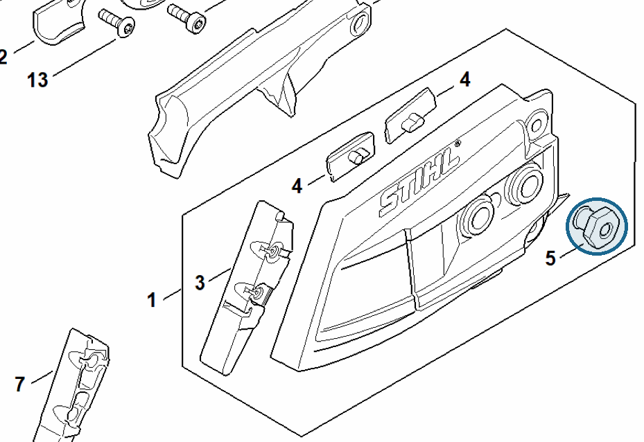

Collar nut M8
0000 995 0803
MS 261 — chain sprocket cover
M8 collar nut on the chain sprocket cover. The parts list records one at item 14.
Item 14 Qty listed: 1

MS 261 C-M spare-parts list, 10/02/2023. Drawing p. 15; parts table p. 16.
MS 462 — chain sprocket cover
M8 collar nuts on the chain sprocket cover.
Item 5 Qty listed: 2

MS 462 C-M Z spare-parts list, 10/29/2024. Drawing p. 17; parts table p. 18.